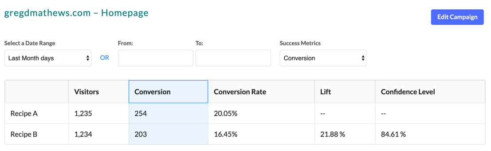

There are a lot of A/B testing options out there which are either too expensive or require a PhD. I found puffin.io because I wanted to do some A/B testing myself and found puffin.io’s approach to A/B testing software refreshing. puffin.io is simple A/B testing software that makes it so you can set up your first A/B test in as little as 5 min. To get everything set up you just need to include the puffin.io JS snippet into the head of your site, and then a snippet surrounding whatever piece of the website you want to A/B Test. Simplicity is so important with A/B testing tools because it helps you to focus on getting actual results, rather than messing with the software itself.
When I loaded the page for the first time it populates Puffin’s dashboard with the puffin.io Snippet names I implemented. and then from there I was able to change that area of the DOM (HTM/CSS)
Another feature I almost missed as I was playing around, you can target which users you want to be included in your experiment by setting up targeting on your campaign. You are able to target by how they entered, current/referring URL, and all the URL parameters that would normally see. At first I thought this was limited but then I realized you can pass just about any targeting condition you might want through the URL parameter. puffin.io can grab that parameter and from there I was able to omit or include those types of visitors from my A/B test.
Once I got a few visitors going through my experiment I keep things focused on telling you the results of your test. It showed me the conversion rate, the lift, and will even calculate the confidence level for me. Having the confidence level listed right next the results is perfect to help prevent people from pre-maturely calling the results when it is not yet statistically significant.
What makes puffin.io great is that they focus on one thing and they do it extremely well. They get straight to the point and help you run A/B tests and don’t clutter up the product with extra features that you never use. Too often products fall into the trap of adding too many features that end up distracting from your goal of improving your product. puffin.io does a great job of focusing on helping you get answers for the questions you have as quick as possible with no distraction.
puffin.io is a useful tool. It doesn't have all the options and features you might be looking for. But from what I can tell it offers about 95% of what any of us might expect from an A/B testing solution. There is one thing I can say for sure, there is zero fat on this product. Its an engineers dream come true. And because of that the entire product experience is lighting fast. Even Google pages speed test ranks them between 99 and 100.
puffin.io is saying something - Too often products fall into the trap of adding too many features that end up distracting from your goal of improving your product. puffin.io does a great job of focusing on helping you get answers for the questions you have as quick as possible with no distraction.